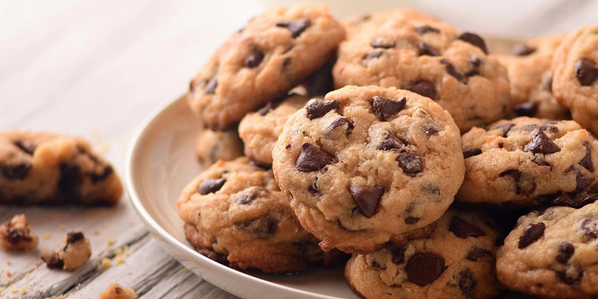

Galletas con chispas de chocolate
Un clásico irresistible que combina una masa suave y ligeramente crujiente con chispas de chocolate
fundentes en cada bocado. Estas galletas caseras son perfectas para meriendas, fiestas o para disfrutar
junto a una bebida caliente, y destacan por su equilibrio entre dulzor, textura y aroma.

Ingredientes
- ¾ taza de azúcar granulada
- ¾ taza de azúcar morena compacta
- 1 taza (225 g) de mantequilla o margarina, suavizada a temperatura ambiente
- 1 cucharadita de esencia de vainilla
- 1 huevo grande
- 2¼ tazas (unos 280 g) de harina de trigo todo uso
- 1 cucharadita de bicarbonato de sodio
- ½ cucharadita de sal
- 1 taza de nueces picadas (opcional para un toque crujiente)
- 1 bolsa (12 oz / 340 g, equivalente a 2 tazas) de chispas de chocolate semidulce
Proceso
- Prepara el horno:
Precalienta el horno a 190 °C (375 °F). Engrasa ligeramente una bandeja para hornear o utiliza papel
vegetal.
- Bate ingredientes húmedos:
En un tazón grande, bate con una batidora eléctrica, a velocidad media, los azúcares (granulada y
morena), la mantequilla, la vainilla y el huevo, hasta que la mezcla esté cremosa y bien integrada.
- Agrega ingredientes secos:
Incorpora la harina, el bicarbonato y la sal, mezclando suavemente. La masa resultante será algo firme.
Luego, añade las nueces (si las usas) y las chispas de chocolate, mezclando hasta que estén distribuidas
homogéneamente.
- Forma y hornea las galletas:
Coloca porciones de masa del tamaño de una cucharada grande en la bandeja, dejando unos 5 cm entre cada
galleta para permitir que se expandan. Hornea entre 8 y 10 minutos, o hasta que los bordes empiecen a
dorarse y el centro aún esté ligeramente suave.
- Enfriado:
Retira del horno y deja reposar 1 a 2 minutos sobre la bandeja; luego transfiérelas con cuidado a una
rejilla para que se enfríen completamente.
Obtendrás galletas con bordes ligeramente crujientes, centros tiernos y un sabor equilibrado entre dulce y
mantecoso, realzado por chispas de chocolate fundentes. Las nueces (opcional) agregan un agradable contraste
de textura. Estas galletas son ideales para servir aún tibias o almacenar en un recipiente hermético;
quedarán prácticamente intactas, con esa irresistible textura casera, durante varios días.